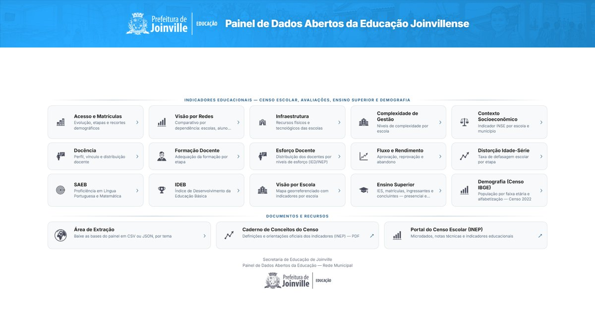
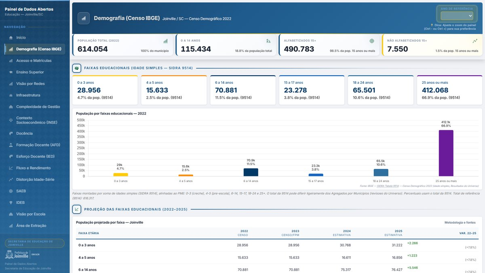
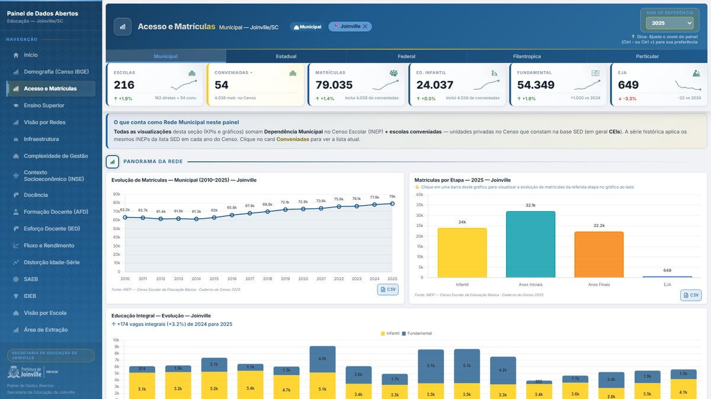
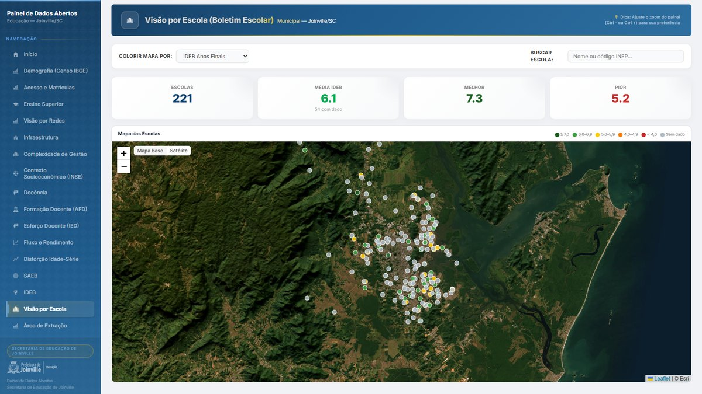

Indicadores oficiais e demografia IBGE em plataforma pública da rede municipal
A Secretaria Municipal de Educação de Joinville precisava de um painel público — governo–cidadão e governo–gestor — que reunisse fontes oficiais do município: demografia do Censo IBGE, microdados do INEP (Censo Escolar, fluxo, TDI, SAEB/IDEB) e visão por escola da rede municipal.
O recorte é o município (código IBGE 4209102), com unidade de análise na escola. Sem uma arquitetura comum de território, indicador e período, a gestão e o público não consultam a mesma série nem extraem os dados de forma aberta.




Concebi e implementei o painel público da rede municipal, com a mesma cadeia fonte oficial → território → interface:
Painel público: matheus-bianco.github.io/painel-indicadores-joinville
O painel tornou públicos, em um só lugar, os indicadores da educação municipal de Joinville — cerca de 79 mil matrículas, com demografia IBGE, séries do INEP e mapa por escola. Gestores e cidadãos consultam e extraem os mesmos dados oficiais. É uma plataforma de relacionamento governo–cidadão construída sobre infraestrutura territorial de fontes oficiais.